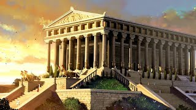

Храм Артемиды Эфесской

Древнегреческий город Эфес на полуострове Малая Азия (территория современной Турции) жители посвятили богине Артемиде. В VI веке до нашей эры они решили построить своей покровительнице величественный храм – Артемиссион. Всего, как гласит история, строительство заняло 120 лет. Это было гигантское строение площадью более 6000 квадратных метров, опоясанное двумя рядами высеченных из мрамора колонн 18-метровой высоты. Но простоял он не более ста лет. В 356 году до нашей эры житель Эфеса Герострат поджёг храм, решив так увековечить своё имя.
Эфесцы не смирились с утратой. Собрав деньги, они восстановили храм в прежнем великолепии, превратив его не только в святилище Артемиды, чья 15-метровая статуя была установлена в главном зале, но и в собрание произведений искусства выдающихся художников того времени. Храм Артемиды стал самым знаменитым музеем античности, просуществовав так более 600 лет.
В 263 году нашей эры готские племена захватили Эфес и разграбили храм. В византийский период его мраморную облицовку разобрали, чтобы использовать как строительный материал, а речные наносы похоронили остатки фундамента, и лишь в XIX веке английские археологи на шестиметровой глубине открыли следы некогда великого сооружения.